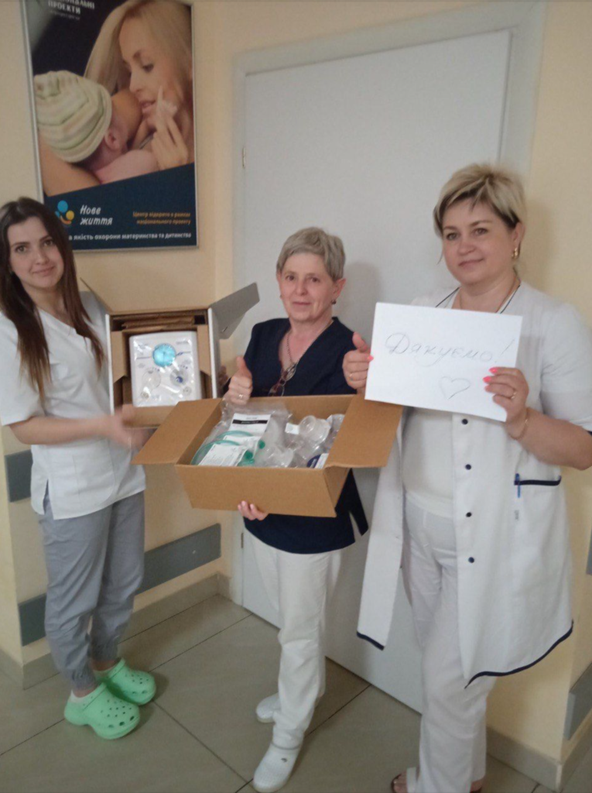

Home / Service projects / Ukraine
There is so much we can learn from each other
NEOPUFF is a simple device to help babies breathe – in many cases the availability of this at the right place at the right time makes the difference between life and death. The Fellowship in partnership with the Rotary Cub (RC) of Klosterneuburg and the support of RC Leoban delivered 25 Neopuff delivery to 15 cities in Ukraine.
Yuliya Bitner from Lviv says: “Such device as Neopuff can literally save the future of Ukraine by saving newly borned, little babies. Everyday it’s rescuing babies in 15 cities of Ukraine. It’s impossible for you to hear each “thank you” from the doctors but on behalf of them I can say that you are a part of big important project and we value it a lot! I do believe, these little children will grow up and make the difference in the world. Because investing in health of our children- is investing in future! Thank you for your commitment to Ukrainian people. Sending you, my love.”
Safe delivery of life saving devices
